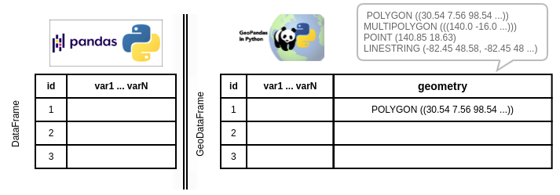

Mini présentation de GeoPandas¶
Une large partie des exemples proposés sont réalisés sous Python avec le package GeoPandas. Mais qu’est ce qui différencie un DataFrame de Pandas d’un GeoDataFrame de GeoPandas ?
{kind=link}
Avant de commencer les exemples, faisons le point sur les principales méthodes de GeoPandas :
Méthode |
Explication |
Exemple de code |
|---|---|---|
Crée un GeoDataFrame à partir d’un shapefile, d’un GeoJSON, … |
gpd.read_file(“data.shp”) |
|
Exporte en GeoDataFrame dans un format shapefile, GeoJSON (driver=”GeoJSON”) ou GeoPackage (driver= »GPKG ») |
gdf.to_file(« data.geojson », driver=”GeoJSON”) |
|
Sélectionne les polygones au sein d’un cadre donné |
df.cx[xmin:xmax, ymin:ymax]] |
|
Fusionne un GeoDataFrame avec un DataFrame |
df.merge(gdf, on=”code”) |
|
Fusionne deux GeoDataFrame en s’appuyant sur leur relation spatiale. On fixe le paramètre how pour décider du type de jointure et le paramètre op pour choisir si la jointure a lieu |
geopandas.sjoin(gdf1, gdf2, how= »inner », op=”intersects”) |
|
Concatène deux GeoDataFrame mais attention les colonnes de géométrie doivent avoir le même CRS |
gdf1.append(gdf2) | |
|
Fusionne les géométries et agrège (somme, moyenne, minimum, maxmum …) des données spatiales par groupe |
gdf.dissolve(by=”variableAgrégation”, aggfunc=”sum”) |
Le package contextily permet notamment d’ajouter un fond OpenStreetMap. Il faut d’abord importer le package contextily comme ctx puis ajouter ce fond de carte OpenStreetMap à la carte représentée.
Méthode |
Explication |
Exemple de code |
|---|---|---|
Ajoute un fond de carte OPenStreetMap à notre plot |
ctx.add_basemap(ax) |
La geometry possède différents attributs et méthodes très utiles :
Méthode |
Explication |
Exemple de code |
|---|---|---|
area |
Calcule l’aire des objets géographiques (en m²) |
gdf.geometry.area |
centroid |
Calcule le centroïde |
gdf.geometry.centroid |
convex_hull |
Calcule le plus petit polygone convexe de chaque objet à moins que le nombre de points décrivant l’objet est inférieur à 3 |
gdf.geometry.convex_hull |
total_bounds |
Retourne un tuple contenant min_x, min_y, max_x et max_y associés aux frontières maximales de l’objet |
df.geometry.total_bounds |
unary_union |
Fusionne les géométries avec une intersection non nulle |
gdf.geometry.unary_union |
buffer |
Calcule une zone tampon autour d’une unité spatiale en indiquant le rayon de ce cercle comme paramètre |
gdf.geometry.buffer(10) |